flowchart LR
subgraph A["Disegni a unità singole"]
A1[Casuale semplice]
A2[Sistematico]
A3[Stratificato]
A4[CPV]
end
subgraph B["Disegni a grappoli"]
B1[A grappoli]
B2[A due stadi]
end
A4 --> A4n[p proporzionali alla dimensione]
A3 --> A3p[Proporzionale]
A3 --> A3o[Ottimale<br/>Neyman]
2 Campionamento
Nel campionamento probabilistico ogni unità della popolazione obiettivo ha una probabilità di inclusione nota e positiva, \(\pi_i > 0\). È questa struttura a permettere l’inferenza design-based: si usano stimatori come quello di Horvitz-Thompson e si quantifica l’incertezza rispetto al meccanismo di campionamento, cioè rispetto a ciò che accadrebbe ripetendo l’estrazione.
Non significa che fuori dai disegni probabilistici non si possa stimare nulla: significa che viene meno la giustificazione design-based, quella fondata esclusivamente sul meccanismo di selezione noto.
2.1 Popolazione, frame, campione
| Termine | Definizione | Esempio |
|---|---|---|
| Popolazione obiettivo (\(U\)) | Insieme delle unità su cui si vuole inferire | Tutti i clienti di una catena retail |
| Frame | Elenco operativo da cui si estrae | Il database del sistema di gestione dei clienti (CRM, customer relationship management) |
| Campione (\(S\)) | Sottoinsieme di unità selezionate dal frame; quelle effettivamente osservate sono le rispondenti, che possono essere meno | I 400 clienti estratti dal CRM (se ne rispondono 320, si osservano 320 clienti) |
| Unità statistica | Elemento su cui si rileva il dato | Il singolo cliente |
L’errore di copertura nasce quando il frame ≠ popolazione obiettivo (es. clienti senza email esclusi dal frame ma presenti in popolazione).
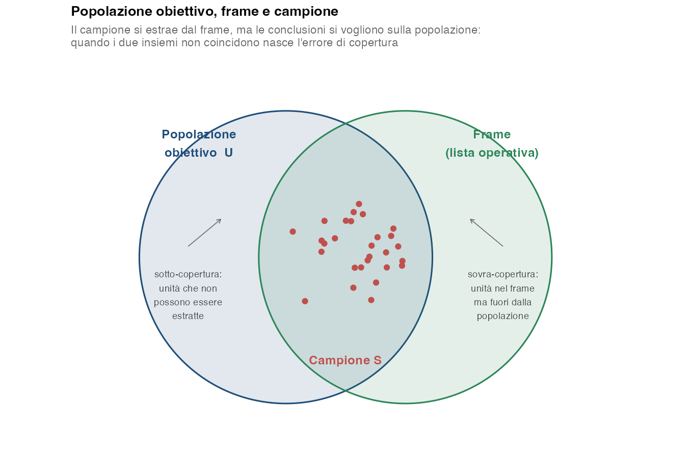
2.2 Probabilità di inclusione e pesi
In un disegno probabilistico, ogni unità \(i \in U\) ha una probabilità nota \(\pi_i > 0\) di entrare nel campione. Il peso di Horvitz–Thompson è il reciproco:
\[ w_i = \frac{1}{\pi_i} \]
Il peso ha un’interpretazione immediata: ogni unità del campione vale per \(w_i\) unità della popolazione. Un cliente che aveva una probabilità su 40 di essere estratto, nelle stime conta come 40 clienti.
Lo stimatore di Horvitz-Thompson (HT) del totale somma i valori osservati, ciascuno moltiplicato per il proprio peso; la media si ottiene dividendo il totale per \(N\):
\[ \hat T_y = \sum_{i \in S} w_i \, y_i \qquad\qquad \hat{\bar Y} = \frac{\hat T_y}{N} \]
In campionamento casuale semplice senza reinserimento (SSR) \(\pi_i = n/N\) per ogni \(i\), quindi \(w_i = N/n\) per tutte le unità. Quando i pesi sono tutti uguali il disegno si dice autoponderato: pesare non cambia nulla e la media semplice del campione è già corretta.
- Pesi uguali (disegni autoponderati): casuale semplice, sistematico, a grappoli, stratificato con allocazione proporzionale, due stadi quando da ogni grappolo si estrae la stessa frazione di unità.
- Pesi diversi fra unità: campionamento con probabilità variabili (CPV), stratificato con allocazione non proporzionale (per esempio quella di Neyman), due stadi quando da grappoli di dimensione diversa si estrae lo stesso numero di unità. In questi disegni la media semplice non è in generale design-unbiased, perché le probabilità di inclusione differiscono: serve uno stimatore coerente con il disegno e, quando necessario, i corrispondenti pesi di campionamento.
ConsiglioEsempio: perché la media semplice può sbagliare
Una catena ha 5 000 clienti divisi in due strati di dimensione diversa, e in ciascuno si intervistano 100 clienti:
| Strato | Clienti \(N_j\) | Intervistati \(n_j\) | \(\pi_i\) | Peso \(w_i\) | Spesa media nel campione |
|---|---|---|---|---|---|
| A | 4 000 | 100 | 1/40 | 40 | 300 € |
| B | 1 000 | 100 | 1/10 | 10 | 600 € |
- Media semplice dei 200 intervistati: \((100 \cdot 300 + 100 \cdot 600)/200 = 450\) €. Ogni intervistato conta allo stesso modo, quindi lo strato B pesa per metà, mentre nella popolazione è solo il 20% dei clienti.
- Media con i pesi HT: \(\hat T_y = 40 \cdot (100 \cdot 300) + 10 \cdot (100 \cdot 600) = 1\,800\,000\) €, quindi \(\hat{\bar Y} = 1\,800\,000 / 5\,000 = 360\) €. Ogni intervistato di A vale per 40 clienti, ogni intervistato di B per 10: i pesi rimettono i due strati nelle proporzioni della popolazione.
La media semplice sovrastima la spesa del 25%. E non è un errore dovuto al caso, che si riduce aumentando il campione: con la stessa allocazione, anche con migliaia di interviste la media semplice resterebbe intorno a 450 €. È una distorsione, e si elimina solo pesando.
2.3 Errore campionario
L’errore standard (SE, standard error) di uno stimatore \(\hat\theta\) è la sua deviazione standard di campionamento:
\[ SE(\hat\theta) = \sqrt{V(\hat\theta)} \]
Il margine di errore \(\Delta\) a livello di confidenza \(1-\alpha\) è:
\[ \Delta = z_{1-\alpha/2} \cdot SE(\hat\theta) \]
e l’intervallo di confidenza è \(\hat\theta \pm \Delta\).
L’errore standard è un concetto che si capisce meglio vedendolo. Ogni campione che il disegno può produrre darebbe una stima diversa: la distribuzione campionaria dello stimatore è la distribuzione di quelle stime su tutti i campioni possibili, ciascuno con la propria probabilità di essere estratto, e l’errore standard è semplicemente la sua deviazione standard. È un oggetto teorico, che nessuna indagine reale osserva — un’indagine produce un campione solo — ma lo si può approssimare al calcolatore, estraendo dalla stessa popolazione qualche migliaio di campioni e guardando come si distribuiscono le stime.
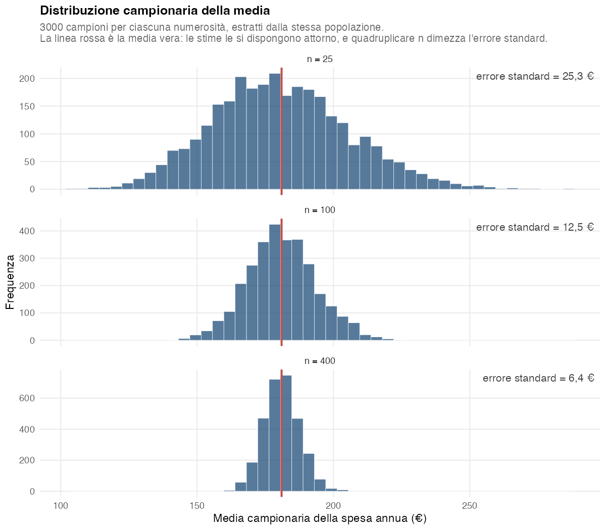
Da qui discende il significato preciso di «intervallo al 95%», che è la fonte del malinteso più comune in tutta la statistica applicata.
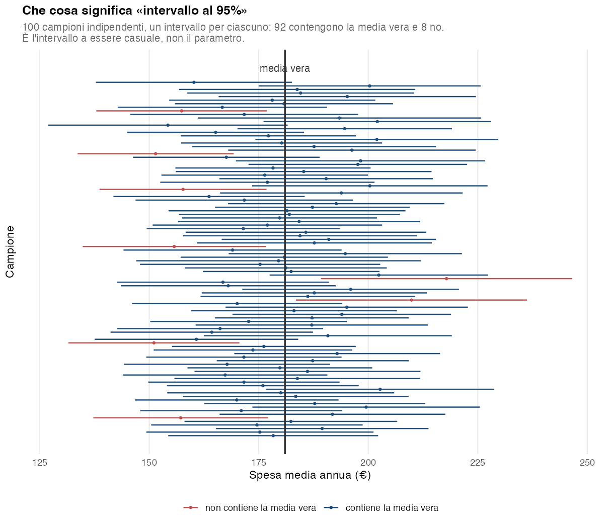
2.3.1 Casi notevoli
Media in SSR
\[ V(\bar y) = \frac{S^2}{n}\left(1 - \frac{n}{N}\right) \]
dove \((1 - n/N)\) è il fattore correttivo per popolazioni finite (fpc, finite population correction), il cui effetto è spesso trascurabile quando \(n/N < 0{,}05\), secondo una comune regola pratica e non per una discontinuità teorica, e \(S^2 = \frac{1}{N-1}\sum_{i=1}^N (y_i - \bar Y)^2\) è la varianza della popolazione finita. Nel seguito, quando la distinzione non è rilevante, si scrive \(\sigma^2\) per la variabilità della variabile di interesse.
Proporzione in SSR
\[ V(\hat p) = \frac{P(1-P)}{n}\cdot\frac{N-n}{N-1} \approx \frac{P(1-P)}{n}\left(1 - \frac{n}{N}\right) \]
Il caso peggiore (varianza massima) è \(P = 0{,}5\): si usa come default quando non si dispone di una stima pilota.
2.4 Numerosità campionaria
Per una proporzione in popolazione infinita, o in campionamento casuale semplice con reinserimento (SCR):
\[ n = \frac{z^2 \, P(1-P)}{\Delta^2} \]
Per una media, \(P(1-P)\) è sostituito dalla varianza \(\sigma^2\) della variabile di interesse:
\[ n = \frac{z^2 \, \sigma^2}{\Delta^2} \]
In entrambi i casi il risultato si arrotonda sempre per eccesso, perché una numerosità più piccola non garantirebbe il margine richiesto. Con \(P = 0{,}5\), \(\Delta = 3\) punti e confidenza 95% la formula dà \(1{,}96^2 \cdot 0{,}25 / 0{,}03^2 = 1\,067{,}1\): servono 1 068 interviste. Con \(\sigma = 250\) € e \(\Delta = 50\) € dà 96,04: servono 97 unità.
La varianza va stimata prima di raccogliere i dati: da un’indagine precedente, da uno studio pilota o da un’ipotesi ragionata. Quando nessuna di queste strade è percorribile si può usare il metodo dinamico descritto nella Sezione 2.4.1.
NotaDerivazione
Si parte da \(\Delta = z \cdot SE(\hat p) = z \cdot \sqrt{P(1-P)/n}\) e si isola \(n\). In assenza di una stima preliminare di \(P\) si usa spesso \(P = 0{,}5\), perché massimizza \(P(1-P)\): dentro questa formula è la scelta più prudente rispetto al valore ignoto di \(P\), cioè quella che dà la numerosità più alta.
Due proprietà di queste formule sono controintuitive e vale la pena vederle su un grafico, perché sono all’origine di quasi tutte le discussioni sul budget di un’indagine.
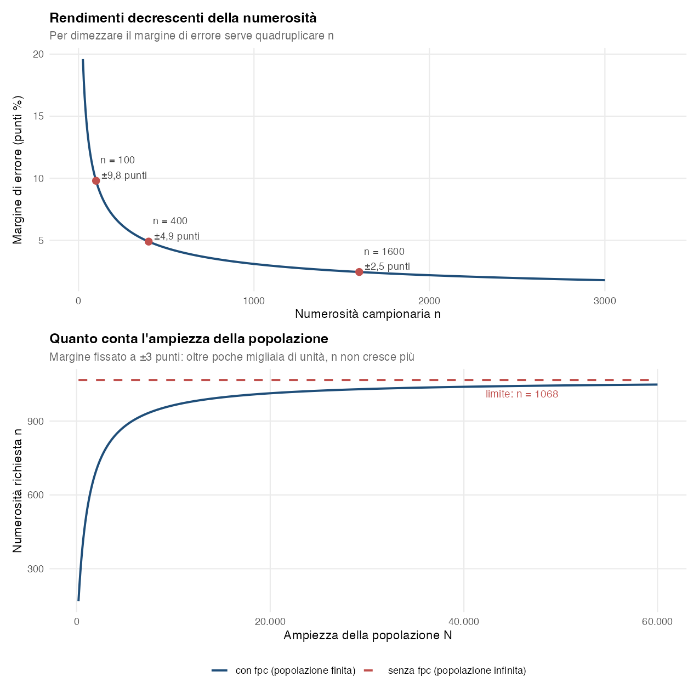
2.4.1 Quando la varianza non è nota: il metodo dinamico
Se non si ha alcuna stima di \(\sigma^2\), la si può stimare durante la raccolta e decidere strada facendo quando fermarsi. È come uno studio pilota che non si chiude mai: a ogni nuova intervista si aggiorna la stima della varianza, e con essa la numerosità necessaria. La procedura:
- si fissano, come sempre, il margine \(\Delta\) e il livello di confidenza, quindi \(z\);
- si raccolgono le prime \(n_0\) unità senza fermarsi, con \(n_0\) almeno pari a 30: una varianza calcolata su pochissime osservazioni è troppo instabile per decidere alcunché;
- da lì in avanti, dopo ogni nuova unità si calcolano la varianza campionaria \(s_k^2\) delle \(k\) unità raccolte e la numerosità che servirebbe se la varianza vera fosse proprio quella: \[ \hat n_k = \frac{z^2 \, s_k^2}{\Delta^2} \]
- ci si ferma alla prima \(k\) per cui \(k \ge \hat n_k\): il campione raccolto è grande quanto la numerosità che esso stesso indica.
All’inizio \(s_k^2\) oscilla molto, e \(\hat n_k\) con lei. Man mano che \(k\) cresce, \(s_k^2\) si assesta attorno a \(\sigma^2\) e \(\hat n_k\) attorno alla numerosità che si sarebbe calcolata conoscendo \(\sigma\). Intanto \(k\) sale di un’unità alla volta, quindi prima o poi raggiunge \(\hat n_k\), e di solito lo fa vicino a quel valore (Figura 2.5).
ConsiglioLo stesso criterio, letto sul margine di errore
La condizione \(k \ge z^2 s_k^2/\Delta^2\) equivale a
\[ z \, \frac{s_k}{\sqrt{k}} \le \Delta \]
cioè ci si ferma quando il margine di errore calcolato sui dati raccolti fin lì scende sotto il margine voluto. Con una popolazione finita si aggiunge il fattore correttivo, e ci si ferma quando \(z \, \frac{s_k}{\sqrt{k}} \sqrt{1 - k/N} \le \Delta\). In pratica basta rifare l’analisi Intervalli di confidenza (§ P-14) sui dati raccolti finora e confrontare con \(\Delta\) il margine di errore che l’analisi riporta.
Il metodo ha un nome preciso in letteratura: stima sequenziale con intervallo di ampiezza fissata. L’idea risale alla procedura a due stadi di Stein (1945), in cui la numerosità totale si calcola una volta sola dalla varianza di un campione pilota. La versione che ricontrolla la regola a ogni nuova unità, cioè in sostanza quella descritta qui, è di Chow e Robbins (1965). Hanno dimostrato che, per qualunque variabile con varianza finita, quando la numerosità richiesta è grande il rapporto fra la numerosità a cui ci si ferma e quella che si sarebbe scelta conoscendo \(\sigma\) tende a 1, e la copertura dell’intervallo finale tende a quella dichiarata.
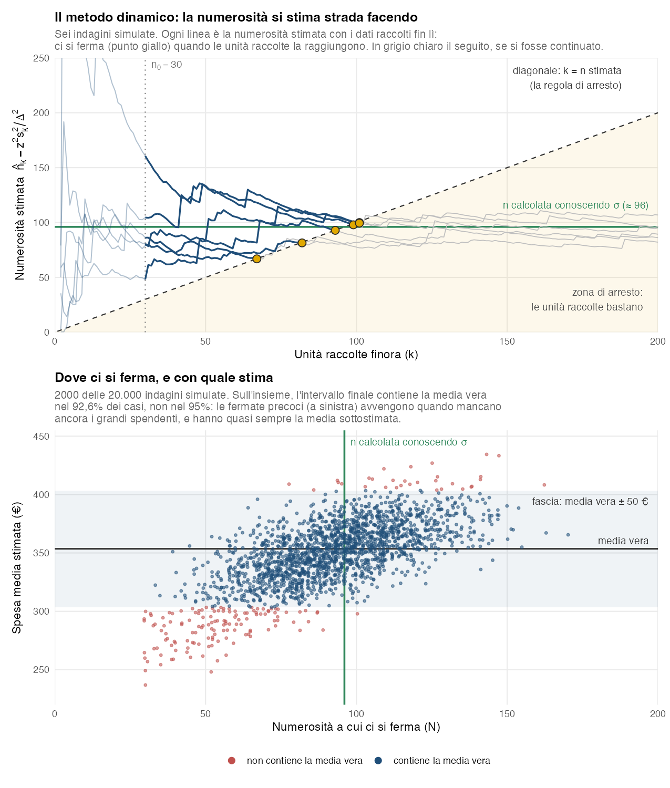
Se \(\sigma\) fosse nota servirebbero \(n = 96{,}04\), cioè 97 unità. Nella Figura 2.5, in alto, prima di \(n_0 = 30\) la stima di \(n\) è instabilissima e non si usa; dopo, ogni linea sale di colpo quando arriva un grande spendente e scende piano negli altri casi. Ci si ferma quando la linea entra nella zona sotto la diagonale, e le sei indagini si fermano fra 67 e 101 unità. In basso, sull’insieme delle simulazioni l’intervallo finale (media ± 50 €) contiene la media vera nel 92,6% dei casi invece che nel 95%. Gli errori non sono simmetrici: le indagini che si fermano presto sono quelle che non hanno ancora incontrato i grandi spendenti, e quasi tutte sottostimano la media.
Il risultato di Chow e Robbins è asintotico: con le numerosità di un’indagine reale la regola funziona bene, ma non alla perfezione.
AvvisoLe cautele del metodo dinamico
- Tende a fermarsi un po’ troppo presto. La regola si ferma più facilmente quando le osservazioni raccolte fin lì sono, per caso, poco variabili: in quei casi \(s_k^2\) sottostima \(\sigma^2\) e la raccolta si chiude prima del necessario. Nella simulazione della figura l’intervallo contiene la media vera nel 92,6% dei casi; con una variabile simmetrica e la stessa varianza, nel 94,3%.
- Le variabili asimmetriche sono il caso peggiore. Con spese, redditi o fatturati, finché nel campione mancano i valori grandi sono basse sia la varianza sia la media. La regola quindi ferma la raccolta proprio nei campioni in cui la media è sottostimata. È una distorsione piccola (nell’esempio 4 € su 354) ma sempre verso il basso.
- Tre accorgimenti riducono il problema: un \(n_0\) non troppo piccolo; il controllo della regola a blocchi, per esempio ogni 10 interviste, invece che dopo ciascuna; un piccolo margine di sicurezza, cioè fermarsi solo quando \(k \ge 1{,}1 \, \hat n_k\). Nell’esempio, con \(n_0 = 30\) e gli altri due accorgimenti, la copertura sale al 94,8% e il campione medio passa da 91 a 107 unità.
- L’ordine di raccolta deve essere casuale. Il metodo richiede che, per qualunque numerosità fissata in anticipo, le unità raccolte fino a quel punto siano un campione casuale semplice. Con una lista si mette il frame in ordine casuale e si contattano le unità in quell’ordine: le prime \(k\) unità formano un campione casuale semplice per ogni \(k\) prefissato. Quando però è la regola di arresto a decidere dove fermarsi guardando i dati, la numerosità finale dipende dai valori osservati e il campione ottenuto non ha più esattamente le proprietà di un casuale semplice: è per questo che la copertura dell’intervallo finale scende sotto il livello nominale (Figura 2.5). Se invece l’ordine dipende dal fenomeno, per esempio prima i clienti più facili da raggiungere, ci si ferma su un campione distorto. Per i disegni complessi il margine va calcolato secondo il disegno (Sezione 2.6).
- Più variabili, una sola indagine. Un questionario ha molte variabili: la regola va controllata su tutte le variabili chiave, e ci si ferma quando è soddisfatta per ciascuna.
- Il budget non è noto in anticipo. Conviene fissare comunque un tetto massimo di interviste compatibile con tempi e costi.
Per una proporzione il punto di partenza resta \(P = 0{,}5\). Qui, a differenza della media, un’ipotesi prudente c’è sempre: \(P(1-P)\) è massima in \(P = 0{,}5\), quindi la \(n\) calcolata con quel valore basta qualunque sia la proporzione vera. Si parte da lì, non dal metodo dinamico. Il metodo dinamico semmai perfeziona quella numerosità durante la raccolta, usando \(\hat p_k(1 - \hat p_k)\) al posto di \(s_k^2\): se la proporzione vera è lontana da 0,5 la regola si ferma prima e si risparmiano interviste. Anche in questo caso \(n_0\) deve essere abbastanza grande da contenere qualche successo e qualche insuccesso: se le prime risposte sono tutte uguali si ha \(\hat p_k(1-\hat p_k) = 0\), e la regola si fermerebbe subito.
E se non si perfeziona nulla? Non succede niente di male: si intervistano più persone di quante sarebbero bastate e si ottiene una precisione migliore di quella richiesta. Il margine effettivamente raggiunto si calcola alla fine sui dati, sostituendo \(\hat p\) a \(P\) — è il margine che l’analisi Intervalli di confidenza (§ P-14) riporta, ed è quello da dichiarare nel report. Per esempio, con \(\Delta = 3\) punti e confidenza 95% il caso peggiore richiede 1.068 interviste; se alla fine la quota stimata è \(\hat p = 0{,}20\), con quelle 1.068 interviste il margine effettivo è di ±2,4 punti invece di ±3. Sapendo fin dall’inizio che \(P \approx 0{,}20\) ne sarebbero bastate 683: il prezzo della prudenza sono le 385 interviste in più, il premio è la precisione in più.
2.5 I disegni probabilistici
I disegni sono sei; lo stratificato compare nella tabella in due righe, una per ciascuna delle due allocazioni possibili.
| Disegno | Quando usarlo | Caratteristica |
|---|---|---|
| Casuale semplice (SCR / SSR) | Frame disponibile, unità omogenee | Uguale per tutti: \(\pi_i = n/N\) (SSR), \(\pi_i = 1-(1-1/N)^n\) (SCR) |
| Sistematico | Frame ordinato per variabile correlata al fenomeno | Estrazione a intervallo \(k = N/n\), partenza casuale in \((0, k]\) |
| Stratificato proporzionale | Strati rilevanti, allocazione proporzionale alle dimensioni | \(n_j = n \cdot N_j/N\) |
| Stratificato ottimale di Neyman | Strati con varianze molto diverse | \(n_j \propto N_j \sigma_j\), minimizza la varianza a parità di \(n\) e di costo unitario fra strati |
| A grappoli | Frame disponibile solo a livello di gruppo | Si estraggono \(m\) grappoli e si rilevano TUTTE le loro unità |
| A due stadi (multistadio) | Come grappoli ma sotto-campionando | Primo stadio: \(m\) unità primarie di campionamento (PSU, primary sampling units); secondo stadio: \(b\) unità per PSU |
| Con probabilità variabili (CPV) | Disponibilità di una misura di dimensione \(x_i > 0\) correlata con \(y\) | Probabilità di estrazione proporzionale alla dimensione \(x_i\): le unità grandi entrano più facilmente |
Il modo più rapido per cogliere la differenza fra i disegni è guardare dove cadono le unità estratte su una stessa popolazione.
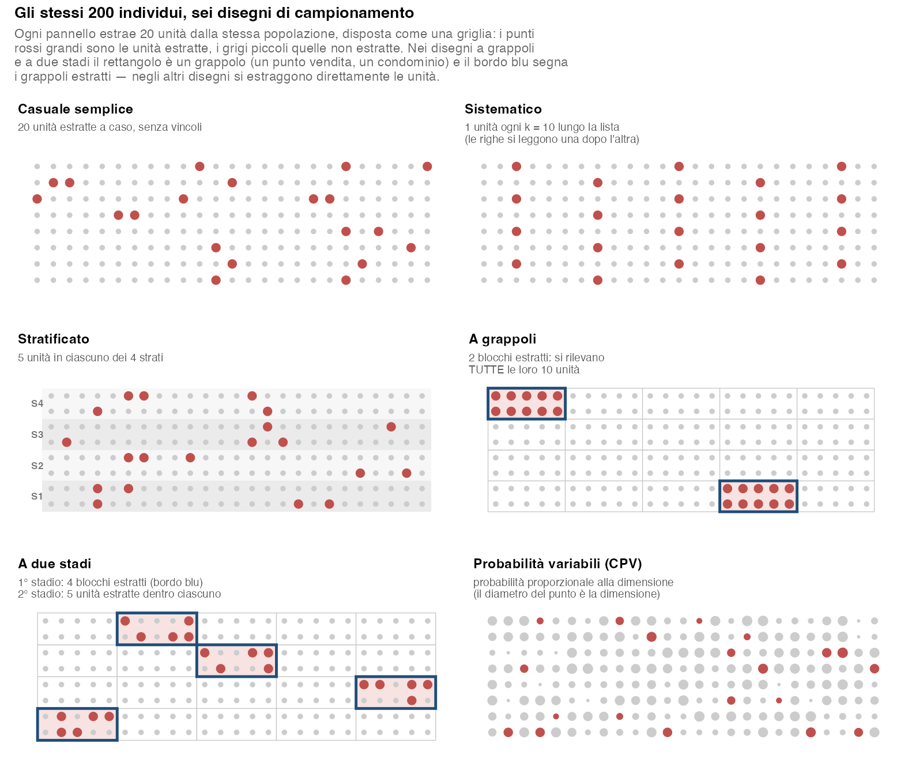
Nella Figura 2.6 il casuale semplice sparpaglia le unità senza vincoli. Il sistematico ne prende una ogni \(k = 10\) percorrendo la lista riga per riga: è l’esempio classico con \(N\) multiplo di \(n\), in cui l’intervallo viene intero, e ne risulta una copertura regolare del frame, che è un vantaggio se l’ordinamento è correlato al fenomeno. Lo stratificato garantisce per costruzione 5 unità in ciascuno dei quattro strati, evitando che il caso ne lasci fuori uno. Nei disegni a grappoli e a due stadi il rettangolo è il grappolo — un punto vendita, un condominio — e la differenza sostanziale rispetto ai disegni precedenti è che si estraggono prima i grappoli, non direttamente le unità. Nel disegno a grappoli si estraggono 2 grappoli e se ne rilevano tutte le 10 unità (i blocchi bordati sono interamente rossi); nel disegno a due stadi si estraggono al primo stadio 4 grappoli e, dentro ciascuno, al secondo stadio solo 5 delle 10 unità: a parità di numerosità l’informazione si distribuisce su più zone della popolazione. Il CPV, infine, privilegia le unità di dimensione maggiore.
La figura rende visibile anche il compromesso di fondo: quanto più le unità del campione sono vicine fra loro (grappoli), tanto meno informazione indipendente portano — è il fenomeno che il Design Effect quantifica.
La trattazione operativa di ciascun disegno è nei capitoli P-08–P-13 della Parte III.
2.5.1 Stratificato: le due allocazioni
Deciso il numero complessivo \(n\), resta da distribuirlo fra gli strati. Le due regole non danno affatto lo stesso campione.
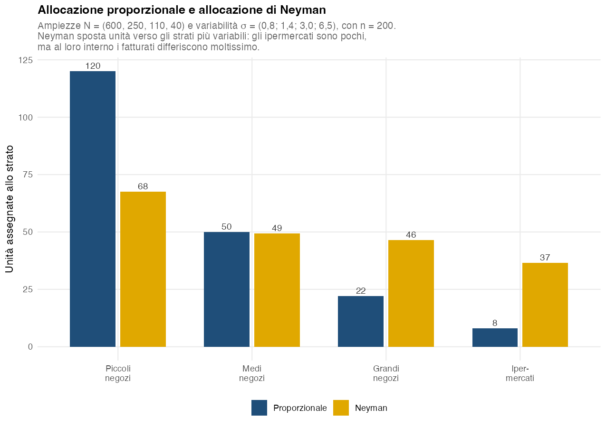
Con l’allocazione proporzionale ogni strato riceve unità in proporzione alla propria ampiezza: i piccoli negozi, che sono la maggioranza, si prendono la fetta più grande. L’allocazione di Neyman pesa invece per \(N_j \sigma_j\) e sposta unità verso gli strati più variabili: gli ipermercati sono pochi (40 su 1.000) ma al loro interno i fatturati differiscono enormemente, e passano da 8 a 37 unità. L’intuizione è che conviene investire osservazioni dove c’è più incertezza da ridurre, non dove ci sono più unità. La formula di Neyman vale però a parità di costo unitario di rilevazione fra gli strati: se intervistare in uno strato costa molto più che in un altro, l’allocazione ottima deve tenere conto anche dei costi.
Entrambe le formule possono assegnare a uno strato una quota inferiore a un’unità: uno strato molto piccolo sotto la proporzionale, uno strato a variabilità nulla sotto Neyman. Lasciarlo a zero significherebbe dare probabilità di inclusione nulla alle sue unità, quindi in pratica si impone una rappresentanza minima per ogni strato non vuoto e si alloca il resto con il criterio scelto: l’allocazione che ne risulta è vincolata, e va dichiarata come tale (§ P-10).
2.6 Design Effect
Disegni più complessi del casuale semplice (stratificato, a grappoli, multistadio, CPV) cambiano la varianza dello stimatore. Il Design Effect (Deff) la confronta con quella di un casuale semplice di riferimento della stessa numerosità:
\[ \text{Deff} = \frac{V_{\text{piano}}(\hat\theta)}{V_{\text{rif}}(\hat\theta)} \]
dove «rif» è il casuale semplice di confronto, con o senza reinserimento secondo il confronto adottato.
- Deff < 1 → piano più efficiente del casuale semplice (tipico stratificato ottimale).
- Deff > 1 → piano meno efficiente (tipico grappoli, multistadio con \(\rho > 0\)).
- Deff = 1 → equivalente al casuale semplice.
Il riferimento è il casuale semplice di pari numerosità. Quando la frazione di campionamento \(f = n/N\) è piccola non importa se con o senza reinserimento; quando non lo è conviene dichiararlo, perché la varianza del casuale semplice senza reinserimento contiene il fattore \(1-f\) e quindi il Deff calcolato rispetto a quello con reinserimento è circa \((1-f)\) volte quello calcolato rispetto al senza reinserimento. Nelle formule e nelle figure che seguono il riferimento è il casuale semplice senza reinserimento alla stessa frazione di campionamento per lo stratificato, per il sistematico e per i grappoli a uno stadio; per lo stratificato e per i grappoli il fattore \(1-f\) compare in entrambe le varianze e si semplifica. I grappoli sono estratti senza reinserimento, e la formula \(1 + (\bar B-1)\rho\) è un’approssimazione che trascura un fattore vicino a 1 quando la popolazione contiene molti grappoli. Nei piani a più stadi la formula analoga \(1 + (b-1)\rho\) trascura invece la frazione di campionamento del primo stadio. Nei campi dell’analisi Design Effect del modulo il riferimento si chiama «SCR» qualunque sia lo schema.
Il Deff serve in due direzioni, e conviene tenerle distinte:
- in fase di progettazione si gonfia la numerosità: \(n_{\text{piano}} = \text{Deff}\cdot n_{\text{rif}}\), cioè quante unità servono al piano complesso per eguagliare la precisione di un casuale semplice di ampiezza \(n_{\text{rif}}\). È il calcolo che esegue l’analisi Design Effect del modulo, arrotondando per eccesso;
- in fase di analisi, dato un campione complesso già raccolto di ampiezza \(n\), la numerosità efficace è \(n_{\text{eff}} = n / \text{Deff}\): quanti rispondenti di un casuale semplice avrebbero dato la stessa precisione.
Sono le formule d’uso, e sono quelle con cui calcola il modulo. Quando il riferimento è il casuale semplice senza reinserimento, però, trascurano un dettaglio: il casuale semplice equivalente avrebbe un’ampiezza diversa da \(n\), e quindi anche un fattore \(1-f\) diverso. Finché \(f\) è piccola la differenza non si vede; quando non lo è, le due formule esagerano un po’ l’effetto del piano: il guadagno se il Deff è minore di 1, la perdita se è maggiore. Il conto esatto eguaglia le due varianze, ciascuna con il proprio fattore \(1-f\):
\[ \frac{1}{n_{\text{eff}}} - \frac{1}{N} = \text{Deff} \cdot \left( \frac{1}{n} - \frac{1}{N} \right) \]
e, con \(n_{\text{rif}}\) al posto di \(n_{\text{eff}}\), la stessa uguaglianza risolta rispetto a \(n\) dà la numerosità di piano, purché il Deff resti lo stesso alla nuova numerosità: nei grappoli, per esempio, cambia se cambia il numero di unità intervistate per grappolo. Con il casuale semplice con reinserimento il fattore \(1-f\) non c’è, e le formule d’uso sono esatte. Nel caso C-01 le 500 interviste di uno stratificato con Deff = 0,39, su 5.000 clienti (\(f = 10\%\)), valgono quanto 1.283 interviste casuali secondo la formula d’uso e quanto circa 1.110 secondo il conto esatto: lo stratificato vale comunque più del doppio delle interviste, ma meno di quanto dica la formula semplice.
Le sezioni che seguono prendono un disegno alla volta: che cosa fa salire o scendere il suo Deff, e di quanto.
2.6.1 Grappoli e multistadio: il prezzo dell’omogeneità
La ragione per cui i grappoli fanno perdere efficienza si vede meglio che spiegarla.
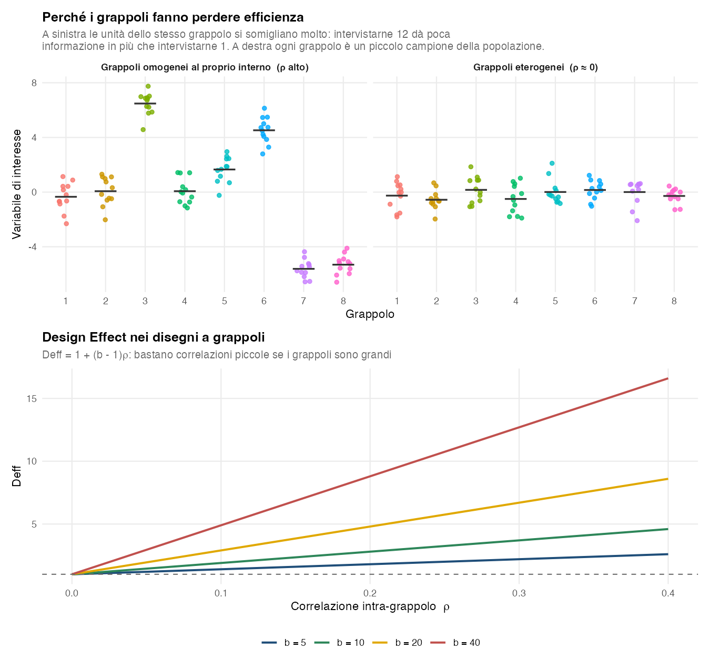
Nella Figura 2.8, a sinistra, intervistare dodici unità dello stesso grappolo dà poca informazione in più che intervistarne una, perché ripetono la stessa risposta; a destra il disegno a grappoli non costa nulla in precisione. In basso, il termine \((b-1)\) amplifica la correlazione: con grappoli grandi bastano valori di \(\rho\) molto piccoli per pagare un prezzo alto. Con \(b = 40\) e \(\rho = 0{,}1\) il Deff vale già 4,9, cioè servono quasi cinque volte le interviste di un campionamento casuale semplice.
È il motivo per cui, nei disegni a grappoli, conviene quasi sempre estrarre molti grappoli piccoli anziché pochi grappoli grandi. Resta da stabilire quanto piccoli, e la risposta non è «il più possibile»: i grappoli nascono per contenere i costi, perché raggiungere un punto vendita o un quartiere costa molto più che intervistare una persona in più una volta arrivati sul posto.
Il numero giusto di interviste per grappolo è quindi un compromesso (Kish 1965): più il grappolo è omogeneo, più conviene che sia piccolo, e più costa raggiungerlo, più conviene sfruttarlo con qualche intervista in più (Figura 2.9).
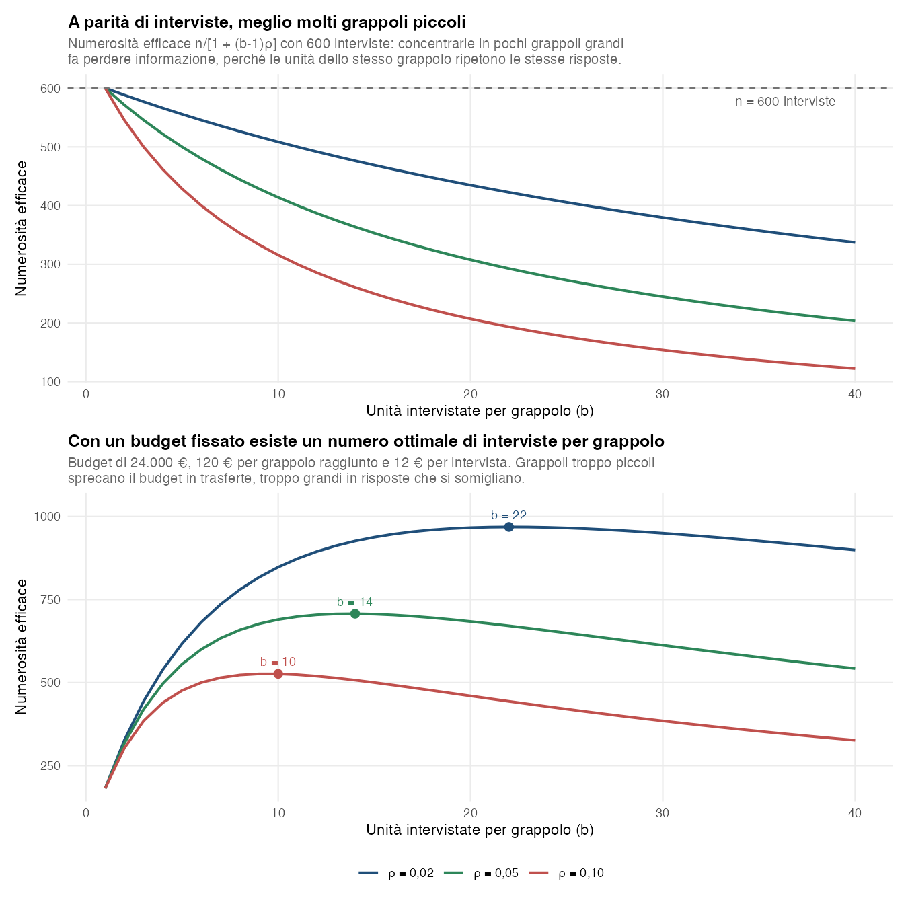
Con \(\rho = 0{,}05\), distribuire le 600 interviste in 60 grappoli da 10 lascia 414 interviste «utili»; concentrarle in 15 grappoli da 40 ne lascia 203, cioè resta «utile» solo un terzo del campione: gli altri due terzi sono sprecati in risposte che si somigliano. A parità di budget, però, anche \(b\) troppo piccolo è sbagliato, perché il budget finisce in trasferte: l’ottimo è a \(b = 22\), 14 e 10 interviste per grappolo per \(\rho\) pari a 0,02, 0,05 e 0,10.
2.6.2 Stratificato: il guadagno sta nelle differenze fra gli strati
Con allocazione proporzionale, e rispetto al casuale semplice senza reinserimento della stessa numerosità, il Deff dello stratificato ha una lettura molto semplice: è la quota di varianza che resta dentro gli strati,
\[ \text{Deff}_{\text{strat,SSR}} = \frac{\sum_j W_j S_j^2}{S^2}, \qquad W_j = \frac{N_j}{N} \]
Tutta la variabilità che passa fra gli strati esce dalla varianza della stima, perché il disegno fissa quante unità prendere in ciascuno strato e quel pezzo di variabilità non è più soggetto al caso. Da qui la regola: strati il più possibile diversi fra loro e omogenei al proprio interno. È l’esatto opposto di ciò che servirebbe ai grappoli, dove i gruppi ideali sono quelli eterogenei, e non è una contraddizione: negli strati si entra tutti, fra i grappoli se ne estraggono alcuni.
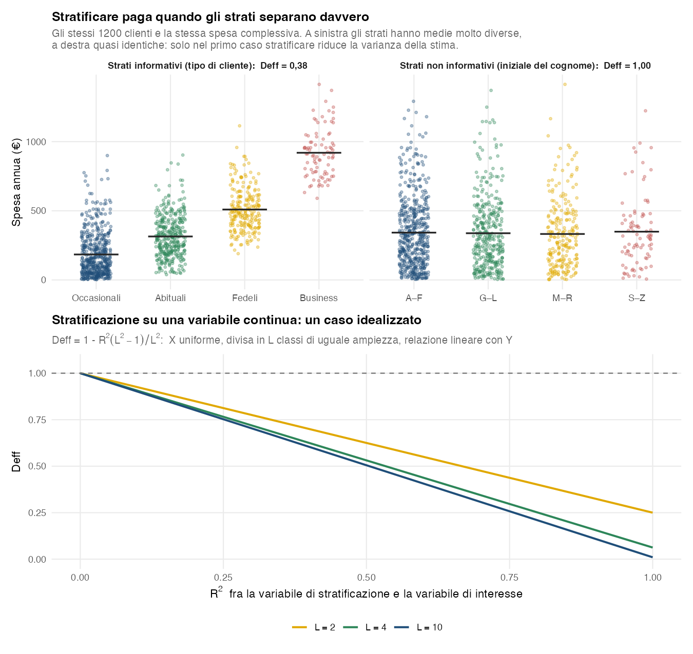
Nella Figura 2.10, in alto a sinistra, i tipi di cliente del CRM hanno medie molto diverse: il Deff vale 0,38, cioè lo stratificato raggiunge la precisione di un casuale semplice con il 38% delle interviste. A destra gli stessi valori di spesa sono distribuiti a caso in quattro gruppi qualunque: le medie coincidono, il Deff è 1,00 e stratificare non serve a nulla. In basso si stratifica tagliando in \(L\) classi di uguale ampiezza una variabile del frame a distribuzione uniforme, legata linearmente alla variabile di interesse. Il guadagno dipende dalla correlazione fra le due variabili: in questo scenario 2 strati danno già tre quarti del guadagno massimo, passare a 4 ne aggiunge ancora una parte apprezzabile, oltre il guadagno aggiuntivo è minimo e il limite è \(1 - R^2\). Con distribuzioni diverse il guadagno a parità di \(L\) può essere maggiore o minore, a seconda dei punti di taglio e della relazione con la variabile di interesse: con una variabile normale divisa in due strati alla mediana, per esempio, anche con \(R^2 = 1\) il Deff vale circa 0,36 invece di 0,25.
Due conseguenze pratiche. La prima: una stratificazione ben costruita riduce sensibilmente la varianza quando gli strati sono omogenei al loro interno rispetto alla variabile di interesse e l’allocazione è appropriata; il vantaggio però non è garantito per qualunque stratificazione e qualunque allocazione. Con l’allocazione proporzionale il Deff che abbiamo scritto è quasi sempre minore di 1, ma può superarlo quando le medie degli strati sono quasi uguali. È un effetto delle popolazioni finite, perché \(S^2\) e le \(S_j^2\) dividono per \(N-1\) e per \(N_j-1\): trascurabile con strati grandi, sensibile con strati di poche unità. Strati poco informativi, strati molto piccoli, arrotondamenti e allocazioni non proporzionali possono quindi azzerare il guadagno e, in certi casi, peggiorare la precisione rispetto al casuale semplice. La seconda: il guadagno dipende dalla variabile di interesse, non dallo strato in sé. Gli stessi strati possono valere 0,4 per la spesa e 1,0 per la soddisfazione, e in un questionario con molte domande il Deff va valutato su quelle che contano davvero.
2.6.3 Sistematico: tutto dipende dall’ordine della lista
Il sistematico, da solo, non ha un Deff: ce l’ha la coppia disegno + ordinamento del frame. Lo stesso passo \(k\) sulla stessa popolazione può dare il disegno più efficiente di tutti o il peggiore, a seconda di come è ordinata la lista.
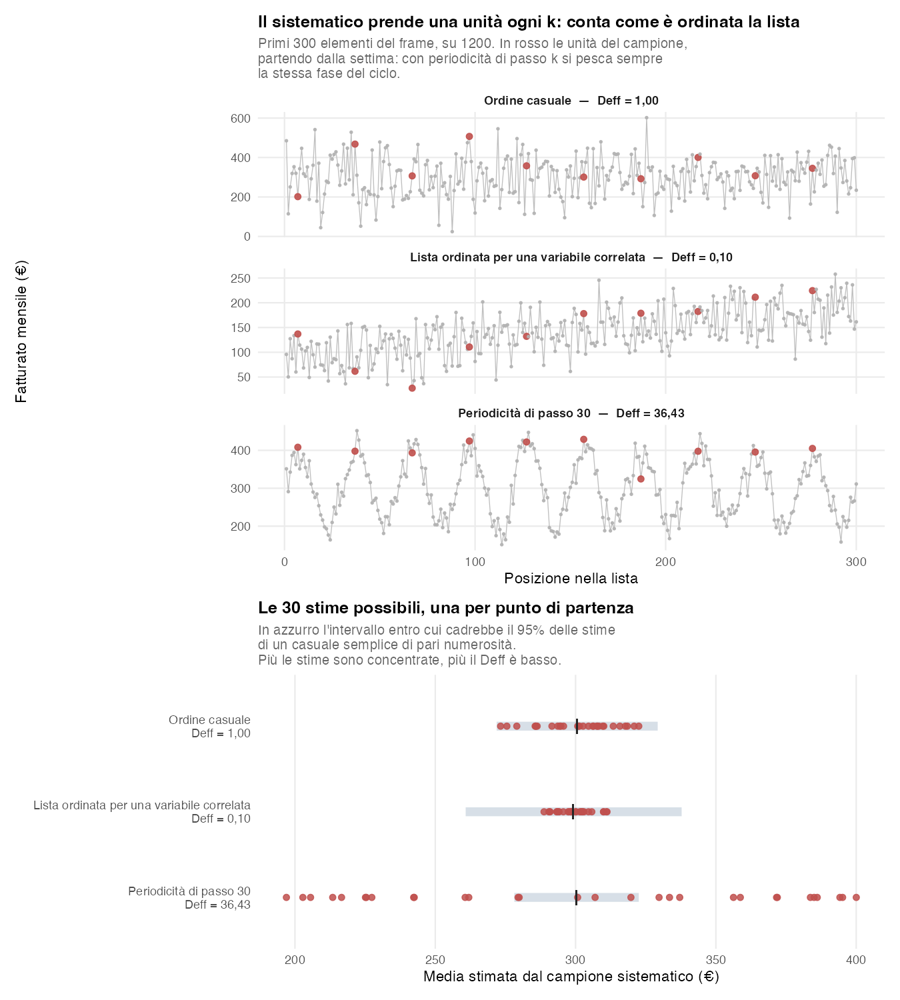
- Ordine casuale → \(\text{Deff} \approx 1\): il sistematico si comporta come un casuale semplice.
- Lista ordinata secondo una variabile correlata con quella di interesse → \(\text{Deff} < 1\), qui 0,10. Il passo \(k\) obbliga il campione a coprire tutta la lista, prendendo unità da ogni fascia: è una stratificazione implicita. È il caso della formula \((k+1)/(N+1)\) della tabella più sotto, che vale per un trend lineare perfetto.
- Lista con periodicità di passo \(k\) (o di un suo divisore), dovuta per esempio a turni, giorni della settimana o listini per reparto → \(\text{Deff} \gg 1\), qui 36. Il campione pesca sempre la stessa fase del ciclo, e nella figura finisce sempre sugli stessi picchi: è come intervistare solo di sabato.
C’è una particolarità utile del caso classico, quello con \(N = n\,k\), \(k\) intero e partenza scelta fra \(1\) e \(k\): i campioni sistematici possibili sono esattamente \(k\), uno per punto di partenza. La varianza del disegno si può quindi calcolare esattamente, enumerandoli tutti, invece di stimarla — è ciò che fa il pannello in basso della figura, costruito appunto con \(N = 1200\) e \(n = 40\). La proprietà serve a studiare il disegno sulla carta, ma non descrive il sistematico a intervallo frazionario che il modulo usa quando \(N/n\) non è intero (§ P-09). Ha anche una conseguenza sulla stima della varianza: con un solo random start non esiste, in generale, uno stimatore design-unbiased della varianza basato esclusivamente sul campione osservato, senza ulteriori assunzioni sulla struttura della popolazione. Nella pratica si usano quindi stimatori approssimati, spesso quelli del casuale semplice: sono approssimativamente corretti quando l’ordinamento è casuale, prudenti (sovrastimano la varianza) quando la lista è ordinata secondo una variabile correlata con il fenomeno, e troppo ottimistici quando c’è periodicità.
In pratica: prima di usare il sistematico si guarda come è ordinato il frame. Se il frame ha una periodicità legata al fenomeno e l’intervallo di campionamento ci interagisce, la precisione peggiora drasticamente: in quel caso serve un ordinamento diverso o un altro disegno. Attenzione però a non prendere il rimescolamento come soluzione automatica: un ordinamento favorevole è esattamente ciò che rende efficiente il sistematico, e mescolare la lista lo riporta al livello del casuale semplice.
2.6.4 CPV: conviene se la variabile segue la dimensione
Nel campionamento con probabilità variabili (CPV) le unità non hanno tutte la stessa probabilità di entrare nel campione, come nel casuale semplice: la probabilità cresce con la loro dimensione, una misura nota in anticipo per tutte le unità del frame. Un ipermercato viene estratto più facilmente di un piccolo negozio, una città più facilmente di un paese. Nella stima le probabilità diverse si compensano con i pesi visti all’inizio del capitolo: un negozio piccolo, che aveva poche probabilità di entrare, rappresenta molti negozi simili; uno grande ne rappresenta pochi.
Il disegno conviene quando la variabile da stimare segue la dimensione. Se il fatturato di un punto vendita è quasi proporzionale alla sua dimensione, ogni unità estratta, moltiplicata per il suo peso, darebbe da sola quasi la stessa stima del totale: qualunque campione esca, la stima cambia poco, e la precisione può essere molto alta. Se invece la dimensione dice poco sul fatturato, i valori pesati oscillano molto da un’unità all’altra: il vantaggio si riduce, e il CPV può risultare meno efficiente del casuale semplice. La procedura in jamovi è nel § P-13.
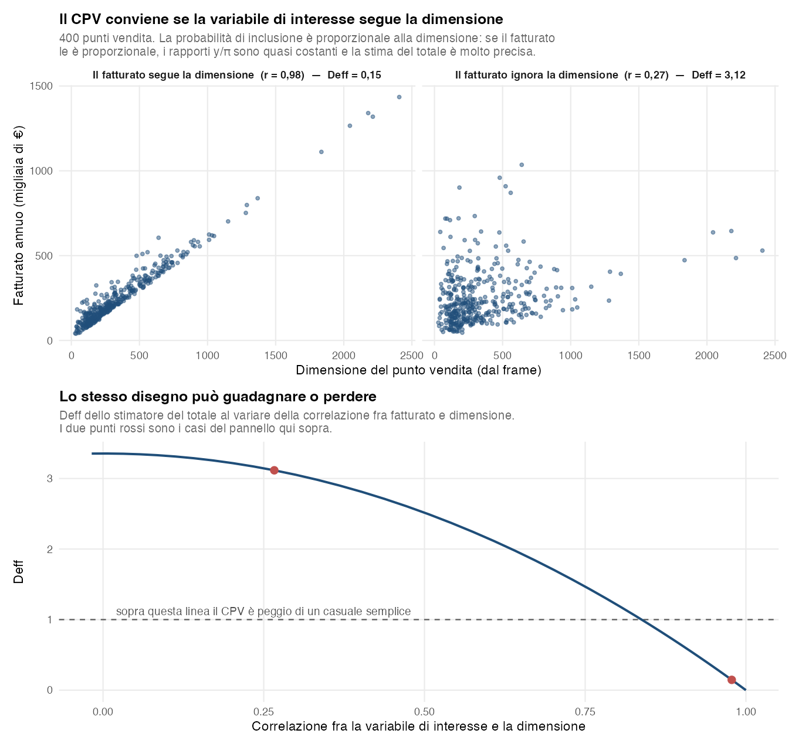
Nella Figura 2.12, a sinistra (\(r = 0{,}98\)) il Deff della stima del totale vale 0,15; a destra (\(r = 0{,}27\)) sale a 3,12: servirebbero tre volte le unità di un casuale semplice. Il pareggio con il casuale semplice, in questo esempio, è attorno a \(r = 0{,}84\): non basta una correlazione «discreta», serve che la dimensione sia una buona misura della variabile di interesse.
Ne seguono due avvertenze. La prima riguarda la scelta della misura di dimensione: superficie, numero di scontrini, fatturato dell’anno precedente non sono equivalenti, e conviene quella più legata alla variabile da stimare. La seconda riguarda i questionari con molte domande: un CPV tarato sul fatturato è tarato male per tutto ciò che non è proporzionale al fatturato, e su quelle variabili si paga un Deff maggiore di 1. Il prezzo è tanto più alto quanto più le probabilità di estrazione sono diverse da un’unità all’altra.
2.6.5 Formule analitiche
| Piano | Deff |
|---|---|
| Sistematico — benchmark sotto trend lineare perfetto, solo con \(N = n\,k\) e \(k\) intero | \(\dfrac{k+1}{N+1}\) |
| A grappoli | \(\approx 1 + (\bar B - 1)\rho\) |
| A più stadi | \(\approx 1 + (b-1)\rho\) |
| Stratificato (allocazione proporzionale) — benchmark idealizzato | \(1 - R^2\dfrac{L^2-1}{L^2}\) |
dove \(\rho\) è il coefficiente di correlazione intra-cluster, \(L\) il numero di strati e \(R^2 = \rho^2(X, Y)\) il quadrato della correlazione fra la variabile di interesse e la variabile continua di stratificazione.
Le due righe indicate come benchmark non sono il design effect generale di quei piani, ma il valore che si ottiene sotto ipotesi precise.
Quella del sistematico descrive una popolazione ordinata secondo un trend lineare perfetto (Cochran 1977, sez. 8.6) e il sistematico classico con \(N = n\,k\) e \(k\) intero, e restituisce valori molto minori di 1. È un benchmark, non un limite inferiore: con altri ordinamenti il Deff reale può essere anche più basso (fino a 0, se tutti i campioni sistematici possibili hanno la stessa media) oppure più alto. Quando \(N/n\) non è intero il modulo estrae con l’intervallo frazionario, per il quale il benchmark non è dimostrato: non lo si estende sostituendo a \(k\) un valore con la virgola, e l’analisi Design Effect in quel caso non lo calcola (§ P-15). Restano fuori formula anche gli altri due casi: con ordinamento casuale \(\text{Deff} \approx 1\), con ordinamento periodico il Deff può essere molto maggiore di 1.
Quella dello stratificato presuppone allocazione proporzionale e uno scenario preciso: una variabile di stratificazione \(X\) a distribuzione uniforme, tagliata in \(L\) classi di uguale ampiezza e legata linearmente a \(Y\). Solo in quel caso il fattore \((L^2-1)/L^2\) misura la quota del guadagno massimo che si ottiene con \(L\) strati; con altre distribuzioni il guadagno a parità di \(L\) può essere maggiore o minore, a seconda della distribuzione, dei punti di taglio e della relazione con \(Y\). Il Deff tende all’ideale \(1 - R^2\) solo al crescere del numero di strati, e quello di uno stratificato reale dipende dalla composizione degli strati, dalle varianze interne e dall’allocazione effettivamente usata.